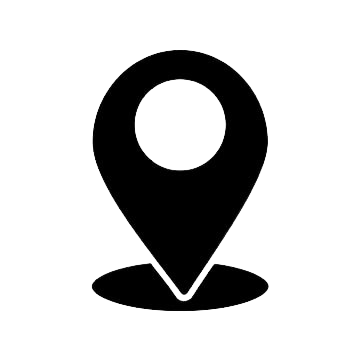

BB8
Perfil
Me chamo BB8, venho de um país chamado Cybertron que está passando por um período muito difícil de guerras, por isso no ano de 2379 (em Cybertrom) ou 2016 (No Brasil) vim parar no planeta terra, venho em paz.
No meu planeta natal só tinha experiência como soldado em guerra, mas tenho muita facilidade em aprender então após algumas pesquisas decidi seguir carreira em marketing digital.
Principais competências
- Criação de Conteúdo: Eu sou capaz de produzir textos e imagens para redes sociais e sites.
- Gestão de Redes Sociais: Eu administro contas em plataformas como Instagram, Facebook e Twitter.
- E-mail Marketing: Eu crio e envio campanhas de e-mail para promover produtos e serviços.
- SEO Básico: Eu melhoro a visibilidade de sites e blogs nos motores de busca.
- Análise de Resultados: Eu acompanho o desempenho das campanhas e aprendo com os dados.
Formação acadêmica
Graduação em marketing pela Universidade de São Paulo (2017)
Mestrado em marketing digital pela Mackenzie (2019)
Experiência profissional
- empresa VortexDigital (2018-2020)
- Consultoria de branding e reposicionamento de marcas no mercado.
- Desenvolvimento de conteúdo criativo e vídeos promocionais para redes sociais.
- empresa Impulso Criativo(2020-2022)
- Especialização em estratégias de marketing digital para startups.li>
- Criação de campanhas de anúncios pagas em Google Ads e Facebook Ads.
- empresa Elevate Lab(2023-2025)
- Implementação de estratégias de SEO e marketing de conteúdo.
- Análises de dados e otimização de campanhas com base em métricas de desempenho.
- Consultoria em marketing de influência e parcerias estratégicas.
Contato
|  | Rua dos Três Irmãos, 245 – Vila Progredior, São Paulo – SP |
| (11) 9156-9745 | |
| BB8@gmail.com |